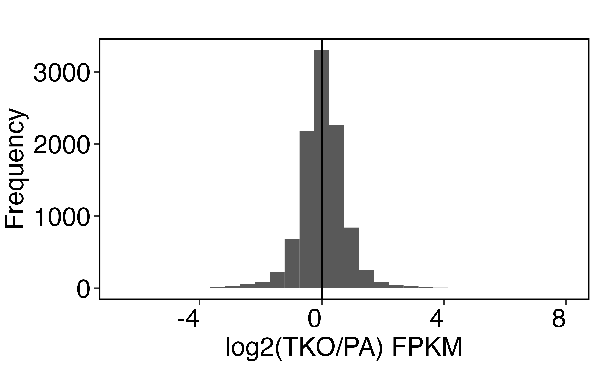
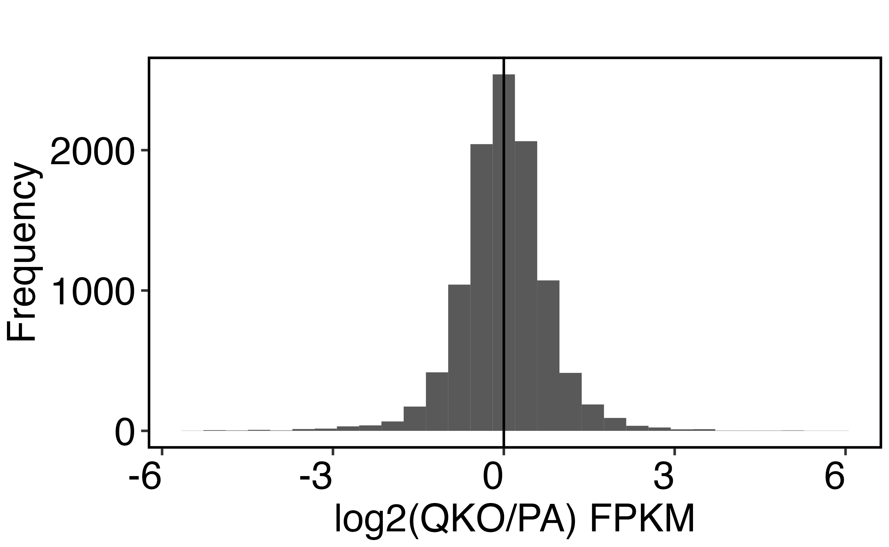
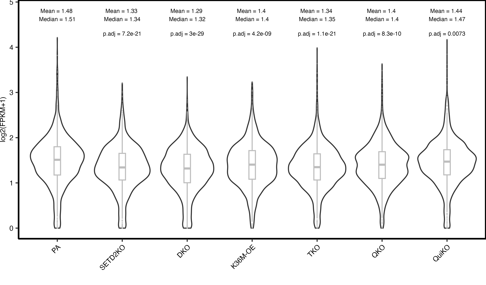
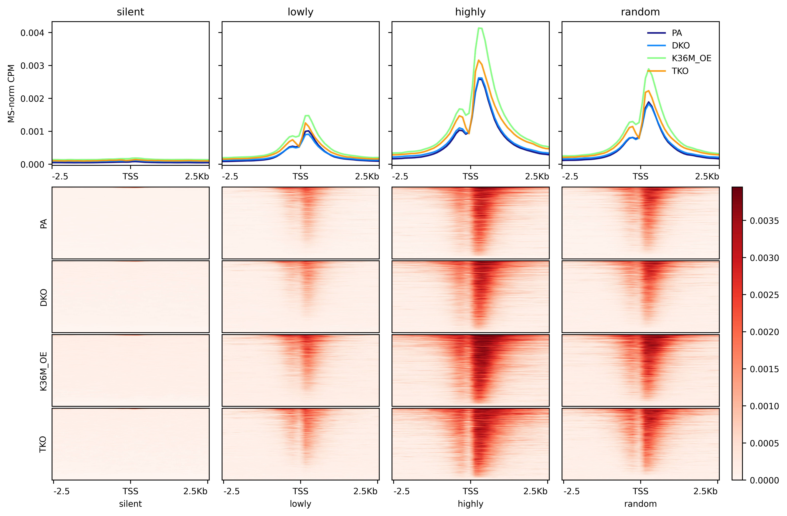

RNA-seq
PCA
HC
Paired comparisons
TKO compared to QKO

QKO compared to QuiKO
Distribution histograms
- For each comparison, only genes with FPKM > 0.5 across conditions was used.
- No clear trends emerges from these plots
PA compared to TKO

PA compared to QKO

PA compared to QuiKO
TKO compared to QKO
QKO compared to QuiKO
Assessing gene expression in specific quantiles
- Per gene, the mean FPKM across all samples were computed. This was used to filter for genes with FPKM > 1. Afterwards, the bottom 2000 genes were taken as lowly expressed genes and the top 2000 genes were taken as highly expressed genes. Additionally, 2000 random genes were generated for plotting.
- Replicates were averaged per condition.
- Wilcox test was used to calculate pairwise comparison p-value against the PA sample and adjusted using FDR.
Lowly expressed genes
- There is a trend for decreasing gene expression for lowly expressed genes following K36me depletion.

Highly expressed genes
- Unexpectedly, gene expression increases for highly expressed genes following me2 depletion.
Randomly sampled genes
Promoters
K27me3

K9me3

ATAC
K27ac

K4me1

DNAme